Git代码管理
VSCode中用git管理代码仓库
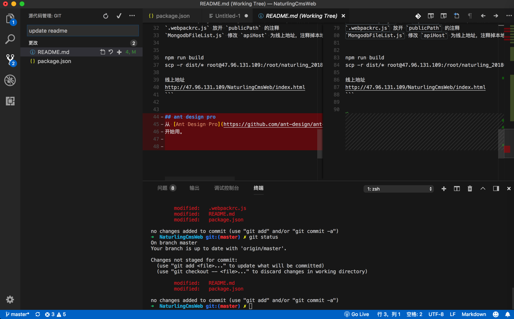
然后尝试用VSCode中的git界面去提交代码：
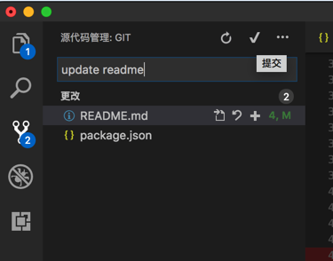
会有提示：
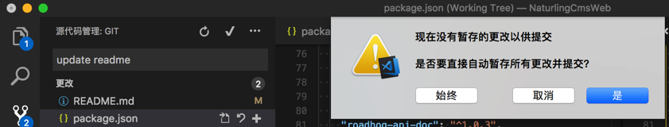
不过去git add后:
➜ NaturlingCmsWeb git:(master) ✗ git add *
The following paths are ignored by one of your .gitignore files:
node_modules
package-lock.json
Use -f if you really want to add them.
➜ NaturlingCmsWeb git:(master) ✗ git status
On branch master
Your branch is up to date with 'origin/master'.
Changes to be committed:
(use "git reset HEAD <file>..." to unstage)
modified: README.md
modified: package.json
git就显示出对应的已经添加了的改动的文件了：
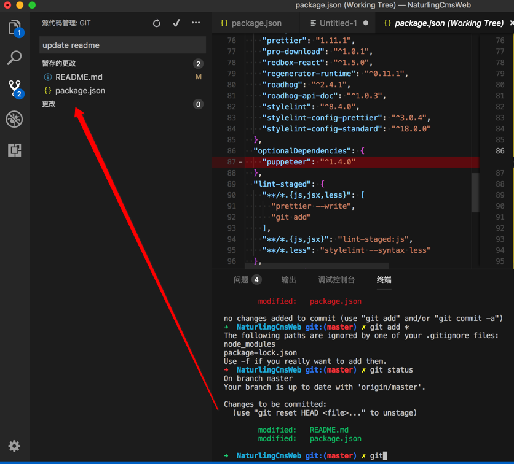
暂存的更改。而 更改 中就是空了。
-》说明：暂存的更改，就是add进去的，本地临时保存的改动
➜ NaturlingCmsWeb git:(master) ✗ git commit -m "1. update readme"
[master 31ef1ca] 1. update readme
2 files changed, 51 insertions(+), 10 deletions(-)
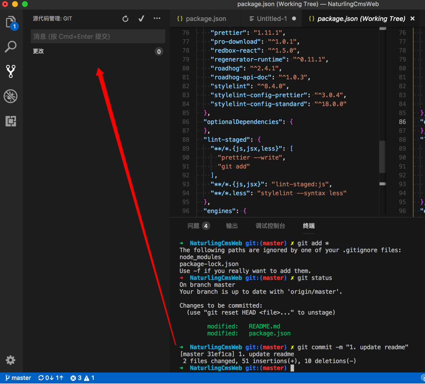
然后再去push：
➜ NaturlingCmsWeb git:(master) git push
Counting objects: 4, done.
Delta compression using up to 4 threads.
Compressing objects: 100% (4/4), done.
Writing objects: 100% (4/4), 1.31 KiB | 1.31 MiB/s, done.
Total 4 (delta 2), reused 0 (delta 0)
remote: Powered by Gitee.com
To https://gitee.com/naturling_tech/NaturlingCmsWeb.git
20b96a1..31ef1ca master -> master
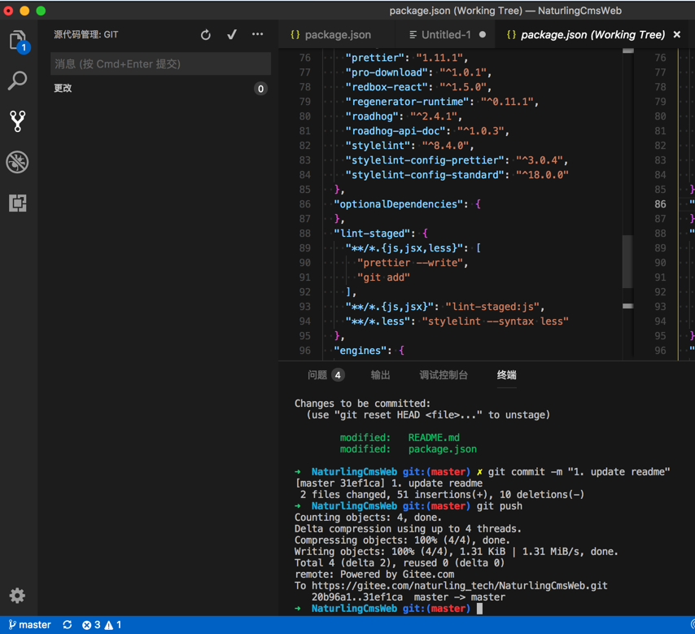
查看文件历史版本和改动差异
如果需要对比之前某次的文件代码和当前最新代码有何改动，可以通过File History文件历史，得到我们要的效果：
比如想要对此这段代码和之前的写法有何不同：
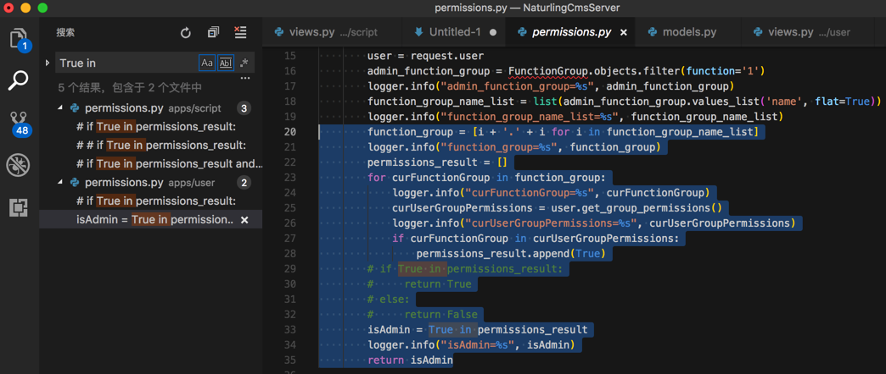
则可以：文件中右键选择 Git: View File History
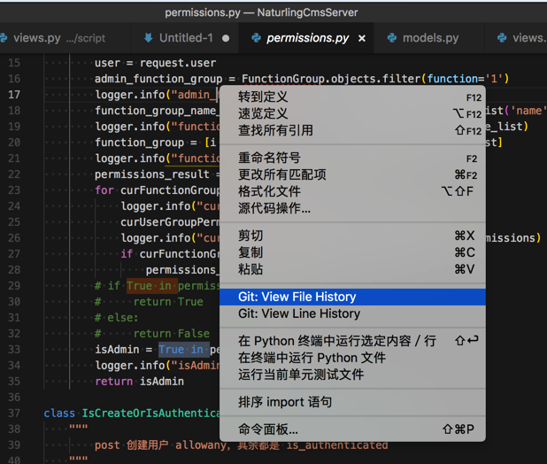
或Tab页中右键选择：
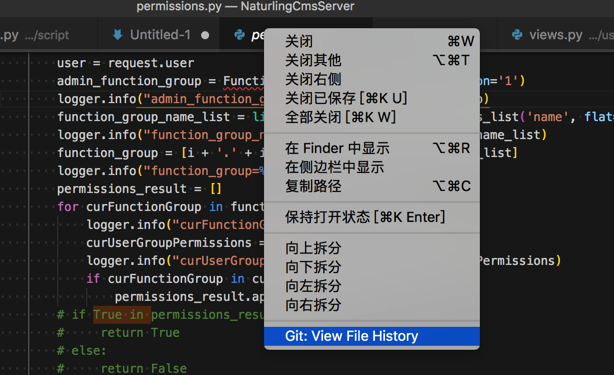
然后就可以看到各个历史版本了：
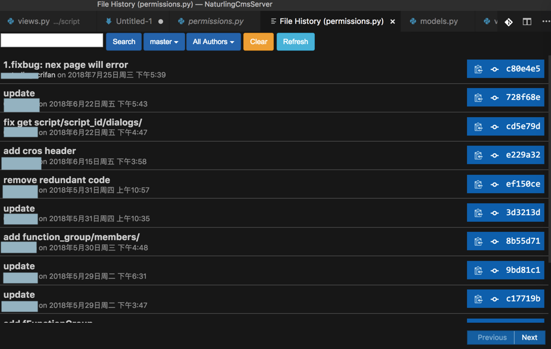
点击其中一个版本可以查看提交详情：
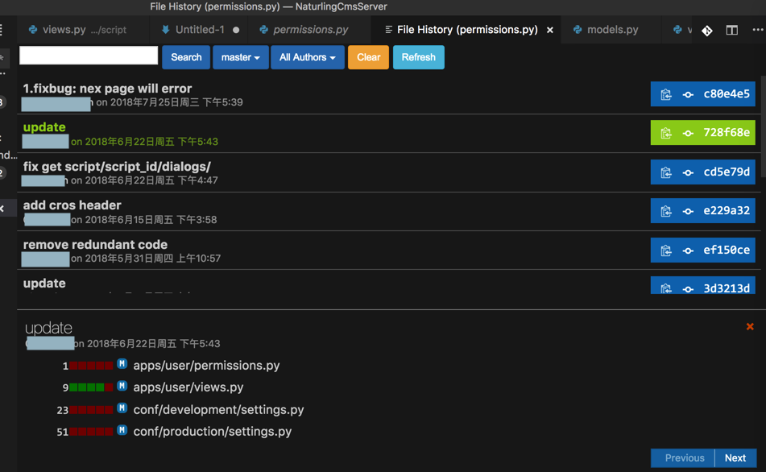
点击某次提交中的某个文件：
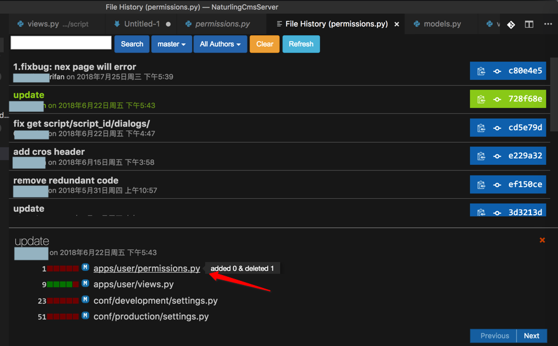
选择：Compare against workspace file
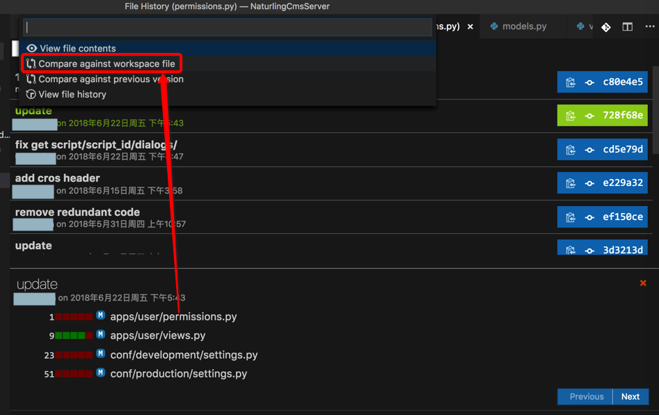
即可去该版本和当前最新文件，去对比内容差异：
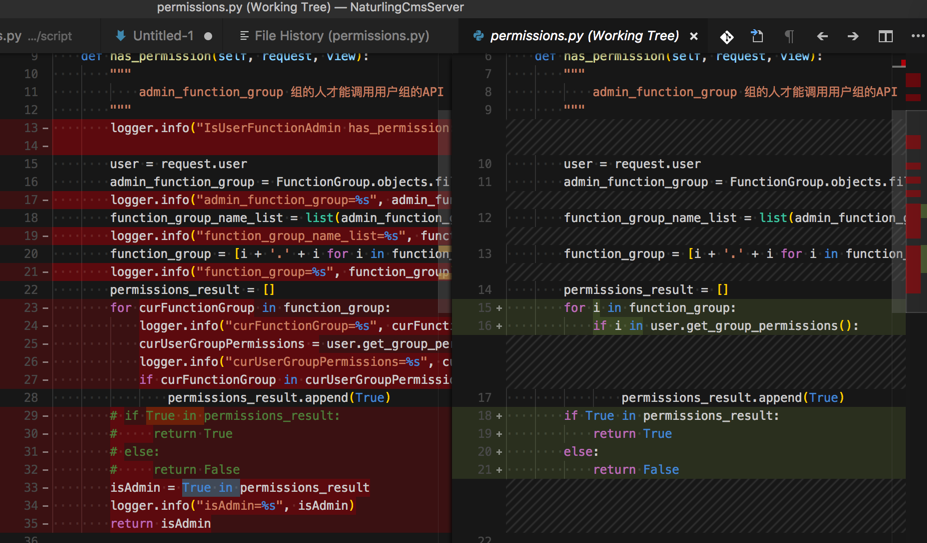
其中左边是最新内容，右边是之前该版本的内容。
另外，如果需要还可以在查看历史版本时，根据不同条件筛选，比如根据作者：
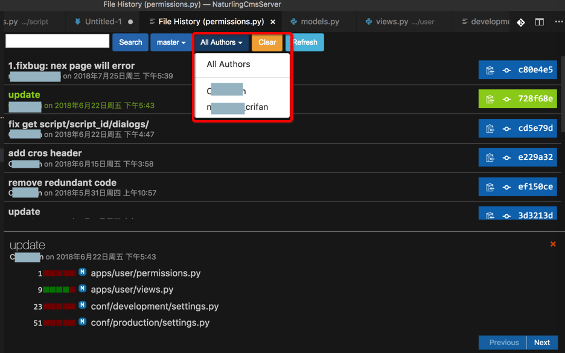
即可只查看某人的提交的代码：
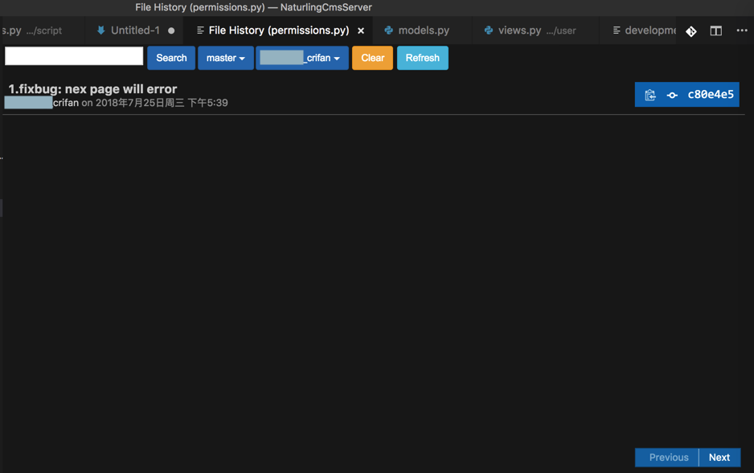